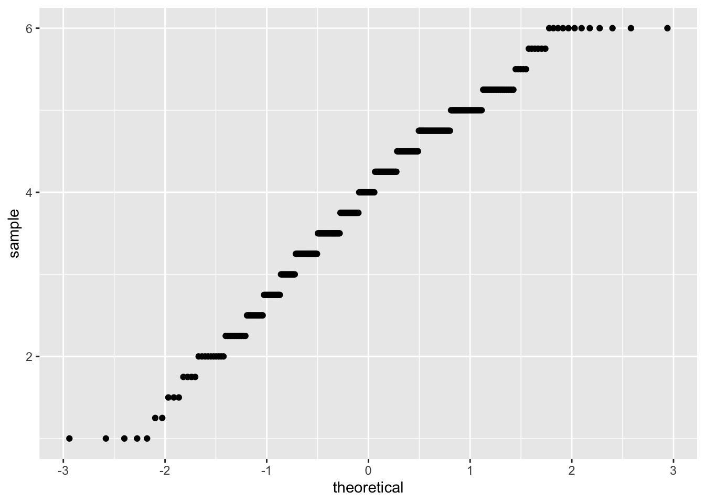

Chapter 6 Simple Statistical Tests
In this session, well cover some of the most basic tests that you might use in your research. While well focus on selecting different tests for different scenarios, at the end of this section well focus on the general linear model, and how you can specify almost any relationship using this framework. In this session, we will cover unifactorial tests with only 2 levels in a factor. In the next session, we will cover more complicated designs.
Specifically, well cover:
- correlations
- one-sample, paired, and independent t-tests
- one-way ANOVA
- simple linear regression
Throughout, we will calculate descriptive statistics for our data.
This section assumes some familiarity with basic statistics. It is beyond the score of this section to teach the basics behind all of these methods, but we will cover some background on how these methods work, and why you might choose to use them in different scenarios.
6.1 Getting Started
As always, we first need to load the tidyverse set of packages for this Chapter.
library(tidyverse)In this session, well use simulated data, and data from real studies using the the Open Stats Lab (OSL) resources (hosted on my GitHub account). For each section/analysis, well just load the data as and when we need it.
6.2 Correlation
We use correlations when we want to see if theres a significant relationship between some observed variables.
More specifically, we have to know a little bit about variance, covariance, and correlation coefficients to grasp correlation and other tests.
Variance tells you how much your data is spread out from the mean, its the average of the squared differences from the mean. Why do we square the differences? Thats so negative values dont cancel out positive values, so we can still have an idea of how much our scores vary.
No variance (i.e.all values are the same) is 0, and larger numbers represent more variance in your data. The square root of the variance is the standard deviation, which we can use to get exact distances of our data from the mean. Your mean +- your standard deviation multiplied by 1.96 represents 95% of the coverage of your data.
Covariance is similar to the variance, but rather than telling you how much one variable varies, it tells you how much two variables vary together. If we have a positive number for the covariance, we know that our variables are related to one-another. However, covariance is sensitive to the scale you have, so if you have big numbers for each variable, your covariance will also be a big number. This magnitude doesnt tell you much about how strong the relationship is between two variables. FOr that, we need the correlation coefficient.
The correlation coefficient is the covariance divided by the standard deviation. This just puts the covariance on a standard scale between -1 and 1, so we now have an idea of how strongly related two variables are. A correlation of 1 shows that the two are perfectly positively correlated, so an increase in one variable is followed by an increase in the other. A correlation of 0 is no relationship, and a correlation of -1 is a perfect negative relationship, where an increase in one variable is followed by a decrease in the other.
6.2.1 Analysing Real Data
In this example, well look at a study by Dawtry, Sutton, and Sibley (2015). In this study, they were interested in why peoples attitudes towards increasing wealth inequality differs within developed nations. They hypothesised that wealthy people will be less supportive of wealth distribution if their social circle is primarily made up of wealthy people. This is because they should see society as being already wealthy, and thus not requiring of wealth distribution.
Our aim here is to test the simple hypothesis that people who see society as fair and are thus satisfied with the current state of affairs will less supportive of wealth redistribution.
Well load and clean up the data set from the Open Stats Lab. For simplicity, well load this data directly from a csv file stored on GitHub. (To get a link for this, you must view the raw file on GitHub online.)
First, well load the data using read_csv(), then well recode the reverse-scores questions of redist2 and redist4 so all of the questions assessing redistribution are on the same scale.
Then well transmute the data, keeping only the columns we need, and calculating the mean scores for perceptions of fairness and satisfaction with distribution of wealth in society (i.e.one factor), and mean support for redistribution (our second factor). During this process, well also keep the participant IDs. Finally, well make everything lowercase, because it looks better!
# variables
scale_max <- 6
# load and clean data
corr_data <- read_csv(
"https://raw.githubusercontent.com/gpwilliams/r4psych/master/lesson_materials/06_simple_statistical_tests/inputs/dawtry-et-al_2015.csv"
) %>%
mutate(redist2 = (scale_max + 1) - redist2,
redist4 = (scale_max + 1) - redist4) %>%
transmute(PS,
Fair_Satisfied = (fairness + satisfaction) / 2,
Support = (redist1 + redist2 + redist3 + redist4) / 4
) %>%
rename_all(tolower)## Rows: 305 Columns: 37
## Column specification
## Delimiter: ","
## dbl (37): PS, PD_15, PD_30, PD_45, PD_60, PD_75, PD_90, PD_105, PD_120, PD_135, PD_150...
##
## Use `spec()` to retrieve the full column specification for this data.
## Specify the column types or set `show_col_types = FALSE` to quiet this message.corr_data## # A tibble: 305 3
## ps fair_satisfied support
## <dbl> <dbl> <dbl>
## 1 233 1 5.5
## 2 157 3.5 3.25
## 3 275 5 3.75
## 4 111 7 2.75
## 5 52 4.5 3
## 6 11 2.5 3.75
## 7 76 3 4.25
## 8 90 4.5 3.5
## 9 93 4 3.75
## 10 104 4.5 3.5
## # with 295 more rowsNext, well calculate some means and standard deviations for these two factors of interest. Weve used the summarise_at() version of the summarise() function, as this allows us to pass two column names, and a list of functions by which to produce our statistics. We can either just pass the functions in a list, or as here give names to these functions which will be appended to the names of the variables in the table.
corr_data %>% summarise_at(
c("fair_satisfied", "support"),
list(mean = mean, sd = sd)
)## # A tibble: 1 4
## fair_satisfied_mean support_mean fair_satisfied_sd support_sd
## <dbl> <dbl> <dbl> <dbl>
## 1 3.54 3.91 2.02 1.156.2.2 Checking Assumptions
To decide which correlation to run, we need to check some assumptions: are the factors linearly related, and do they follow a normal distribution (assumption of normality)? Well leave exploring the first assumption for other tests, just to save time, but well look into testing the assumption of normality here.
We have two methods to check for normality:
- Visual inspection of the quantile-quantile plot which plotsthe correlation between our sample (observed values) and the normal distribution.
- The Shapiro-Wilk test, which is a statistical test of normality. Significant results indicate that the data are non-normal.
corr_data %>%
ggplot(aes(sample = fair_satisfied)) +
geom_qq()corr_data %>%
ggplot(aes(sample = support)) +
geom_qq()
shapiro.test(corr_data$fair_satisfied)##
## Shapiro-Wilk normality test
##
## data: corr_data$fair_satisfied
## W = 0.92602, p-value = 3.697e-11shapiro.test(corr_data$support)##
## Shapiro-Wilk normality test
##
## data: corr_data$support
## W = 0.97622, p-value = 5.993e-05Both the plot and test show that our data are non-normal. As such, we shouldnt use a parametric test such as Pearsons R, but we should use a non-parametric alternative. One option is Kendalls Tau, which rank orders our observations, in an attempt to account for these factors being being non-normally distributed.
6.2.3 Running a Correlation
Next, well run a correlation looking at whether there is any relationship between whether you perceive society as fair, and youre satisfied with , and your support for wealth redistribution.
Here, well use cor.test(), which takes as an argument two columns from a data.frame or matrix, which are your two factors to compare, and produces test statistics, including t-values, p-values, and 95% confidence intervals.
This test defaults to use Pearsons R, and to a two-sided test of significance (i.e.you had no predictions for the direction of effect), but you can change this to greater, a positive relationship, or less, a negative relationship, which will adjust p-values accordingly.
Well use Kendalls Tau here. Note that you simply have to replace kendall with pearson if your data do not violate any test assumptions. Also, well specify that we had a directional hypothesis, where there was a negative relationship between our factors (less).
cor.test(corr_data$fair_satisfied, corr_data$support,
method = "kendall",
alternative = "less"
)##
## Kendall's rank correlation tau
##
## data: corr_data$fair_satisfied and corr_data$support
## z = -13.157, p-value < 2.2e-16
## alternative hypothesis: true tau is less than 0
## sample estimates:
## tau
## -0.5473132As you can see, we have a significant negative correlation between our two factors, indicating that as perceptions of fairness and satisfaction with society (in regards to wealth) increases, support for wealth redistribution decreases.
This is represented by the p-value, which is below 0.05 (but see reasons why you shouldnt mindlessly pick 0.05 as your p-value). Simply, the p-value tells you how often you might observe an effect as large or larger than you one youve found in the long run (i.e.infinite sampling) assuming the null hypothesis is true. If your p-value is below 0.05 by convention we assume that this is an acceptable false-positve rate, as wed only wrongly accept our results as showing an effect when there isnt one present at a rate below 5%. Yes, Neyman-Pearson statistics is weird.
Kendalls Tau is a measure of the association between two factors. For Pearsons R (again, a measure of association), you should typically interpret the R value as \(R^2\), which shows how the percentage of variation in one variable is explained by another.
6.3 t-tests
t-tests allow us to see whether two means are significantly different from one another. Here, well get a t-value and p-value. The t-value is the ratio of the difference between two groups of scores and the difference within the groups of scores. A larger t-value tells us the difference between the groups is large, and a smaller value tells us the difference is small (i.e.they are similar to one another). Nicely, a t-value of 10 tells us that the groups are 10 times as different from one another as they are within each other.
For this next analysis, well look at the lexdec data set from the languageR library that weve used in previous sessions. Well do this to save time on filtering the data too much, as above. The only thing we have to do is to remove the subjects we simulated for the other exercises (i.e.22-30), so we only have real data.
Can you understand the code below? Ask yourself, why might we use as.character(22:30) to state which subjects we should drop?
lexdec <- read_csv("inputs/lexical_decision_raw_data.csv") %>%
filter(!subject %in% (as.character(22:30)))6.3.1 One-Sample t-tests
Here, we want to assess whether the frequencies of words in the study (i.e.how often people use these words) differed significantly from some baseline value of word frequency.
For this, well use a one-sample t-test, which compares our scores to a known average value whether the variance of the population is not known.
We can assume that word frquency is calculated from many observations, and as such the frequency is an aggregate score, so it is appropriate to submit summaires of word frquency to a t-test.
6.3.1.1 Preparing the Data
First, we have to subset our raw data, which contains information on the subjects and items tested, and only get scores for the word frequencies.
lexdec_onesamp <- lexdec %>%
group_by(word) %>%
summarise(freq = mean(frequency))Below, well use the t.test() function to run a t-test. Here, we input as the first value the data or scores we want to test, and in the second part, we specify the mean score in the population (mu) by which to compare the scores.
6.3.1.2 Running the Test
t.test(lexdec_onesamp$freq, mu = 4)##
## One Sample t-test
##
## data: lexdec_onesamp$freq
## t = 5.2044, df = 78, p-value = 1.535e-06
## alternative hypothesis: true mean is not equal to 4
## 95 percent confidence interval:
## 4.463784 5.038436
## sample estimates:
## mean of x
## 4.75111As we can see, there is a significant difference between the frequencies for our sampled words and our assumption for the mean word frequency for all words. Again, we get t and p values, as well as the 95% confidence interval for our scores.
6.3.2 Independent-Samples t-tests
Here, well explore a different question, which is does the native language of the speaker, English or other, have any impact on reaction times to the task?
First, we have to prepare our data.
6.3.2.1 Preparing the Data
We need to create scores aggregated by subject, as our raw data contains information on each subject and the items they responded to. To do this, we just need to calcualte a mean score over all items for each subject in the study. Well use the group_by() and summarise() functions from dplyr to do this.
Additionally, well calculate log-transformed mean reaction times. This is because reaction times are typically not normally distributed, so we should transform them to make them more normal prior to analysis. The log transformation is one way to achieve this.
lexdec_ind <- lexdec %>%
group_by(subject, native_language) %>%
summarise(log_RT = mean(log(RT), na.rm = T))## `summarise()` has grouped output by 'subject'. You can override using the `.groups`
## argument.Well quickly calculate some descriptives for our study to see how the two groups look.
lexdec_ind %>%
group_by(native_language) %>%
summarise(mean_log_RT = mean(log_RT, na.rm = T),
sd_log_RT = sd(log_RT, na.rm = T),
n = n())## # A tibble: 2 4
## native_language mean_log_RT sd_log_RT n
## <chr> <dbl> <dbl> <int>
## 1 English 6.33 0.0982 11
## 2 Other 6.47 0.178 96.3.2.2 Running the Test
As our data are in a long format, we have to do the t-test using a formula, seeing as our log_RT column contains data for both conditions of the experiment. We simply specify our formula like this:
dependent variable ~ condition
The ~ (read: tilde) simply says that the thing on the left is a function of the thing on the right; i.e.our scores are a function of our conditions.
Additionally, we specify where the data is stored (lexdec_ind), and whether the data are paired (i.e.paired-samples test) or not (i.e.independent-samples test). Here, we specify FALSE, as we want an independent samples t-test.
t.test(log_RT ~ native_language, data = lexdec_ind, paired = FALSE)##
## Welch Two Sample t-test
##
## data: log_RT by native_language
## t = -2.2213, df = 11.903, p-value = 0.0465
## alternative hypothesis: true difference in means between group English and group Other is not equal to 0
## 95 percent confidence interval:
## -0.29139463 -0.00268428
## sample estimates:
## mean in group English mean in group Other
## 6.326837 6.473876We can see that there is a significant difference between the two groups. Inspection of the log-transformed means shows us that reaction times are generally quicker for English speakers than non-English speakers. This is unsurprising considering the lexical decisions were made for English words.
You might notice that the degrees of freedom here are not integers (i.e.whole numbers). Thats because R defaults to using Welchs t-test, which does not make the assumption of homogeneity of variance (which is generally a good thing). Due to not making this assumption, the degrees of freedom and p-value are adjusted slightly.
6.3.2.3 Checking Assumptions
As with many tests t-tests make a number of assumptions, some of which are easily handled (e.g.are the data scalar or ordinal and randomly sampled with a large sample size?). However, these tests also assume that the data are normally distributed. Weve done this for the correlation above, so we wont do it again here. However, a final assumption is homogeneity of variance, in which the variance across our samples should be roughly equal. To test for this, we can run a Barlett test for parametric data, or a Fligner test for non-parametric data (using fligner.test()).
Here, well run the Barlett test:
bartlett.test(log_RT ~ native_language, data = lexdec_ind)##
## Bartlett test of homogeneity of variances
##
## data: log_RT by native_language
## Bartlett's K-squared = 2.9197, df = 1, p-value = 0.08751We got a non-significant result from this test, which indicates that the variances are not significantly different from one another, and so weve met this test assumption.
Note that we should check this before running any analyses, but I didnt want to introduce the formula notation in assumption checks.
6.3.3 Paired-Samples t-tests
Paired-samples t-tests are run in the same way as independent-samples tests, only we need to set paired to FALSE within the t-test call.
Well quickly simulate some data to show how this might work. Here, well simulate data for a stroop task, where subjects name words (colour names; e.g.green, blue, red) which are in different colours. Our hypothesis is that they will say the name more quickly if the word and colour are the same (congruent), and they will be slower if they mismatch (incongruent).
Well generate 60 subjects, with the congruent reaction time being around 400ms, and the incongruent reaction time being on average 30ms slower than this.
Finally, well gather the data together, assuming youll often have your data in a long format.
set.seed(1000)
stroop_dat <- tibble(
subject = seq(1:60),
congruent = rnorm(mean = 400, sd = 30, n = 60),
incongruent = congruent + rnorm(mean = 30, sd = 10, n = 60)
) %>%
gather(key = condition, value = reaction_time, 2:3) %>%
mutate(
log_RT = log(reaction_time)
)Note that if your data is in a wide format, you specify the model formula like so:
t.test(data$dependent_variable_one, data$dependent_variable_two, data = data_name, paired = TRUE)In this format, you simply give the column names for where your data is stored for each condition, and R will compare the first entry against the second. However, I typically keep my data in long format, so we will mainly use the formula format for specifying our models. Using the formula notation is also useful for more complex designs where wide formatted data is unrealistic, so well stick to this as our default way to specify our models.
6.3.3.1 Running the Test
The paired-samples t-test formula takes the same form as the independent sampels t-test, only with paired = TRUE.
t.test(log_RT ~ condition, data = stroop_dat, paired = TRUE)##
## Paired t-test
##
## data: log_RT by condition
## t = -25.573, df = 59, p-value < 2.2e-16
## alternative hypothesis: true difference in means is not equal to 0
## 95 percent confidence interval:
## -0.08379794 -0.07163601
## sample estimates:
## mean of the differences
## -0.07771698As with the independent-samples t-test, we get all of the same statistics in the output.
Here, there is a significant difference between the two conditions, with participants responding to items more quickly in the congruent when compared to the incongruent condition. This makes sense, as the name and ink colour both match, so theres no interference during processing.
6.4 ANOVA
Like the t-value, the F value from an ANOVA lets you know whether two groups of scores are similar or different from one another. More specifically, it gives you the ratio of the variance between two samples.
As ANOVAs and t-tests are both part of the general linear model family, the outputs of both tests are similar when we have only 2 levels of a condition. Compare the results of the following analyses with those from the t-tests aboves.
We use the aov() function in R to perform an analysis of variance. With the ANOVA and linear models we will explore later, we get a lot of information from the output just by running the aov() function. As such, well assign this to an object, which can just be a name in which to store our output of the model. After this, we use the summary() function, to get a neat summary of the statistics that we want to look at.
6.4.1 One-Way ANOVA
6.4.1.1 Indpendent-Samples ANOVA
Well simply refit the same data from the lexdec data set to get an idea of how similar t-tests and ANOVAs are. Again, we just need to specify our DV to the left of the condition.
anova_ind <- aov(log_RT ~ native_language, data = lexdec_ind)
summary(anova_ind)## Df Sum Sq Mean Sq F value Pr(>F)
## native_language 1 0.1070 0.10702 5.523 0.0304 *
## Residuals 18 0.3488 0.01938
## ---
## Signif. codes: 0 '***' 0.001 '**' 0.01 '*' 0.05 '.' 0.1 ' ' 1As before, we have a significant difference between the two language groups on their log reaction times in the lexical decision task.
6.4.1.2 Paired-Samples ANOVA
For a paired-sampels ANOVA, we just need to specify our models as before, but we also need to include an error term. This error term takes the form of:
Error(observation_unit/factor)
We always need to specify that this is an error term were adding, hence the name Error(). We then need to specify what our error term is. Since were using a paired-samples test, where the same people ttake part in both conditions, we need to tell R that our error term is for the condition factor within subjects, i.e.different people might react differently to the conditions. Finally, as always we need to specify where our data lies.
Below, well just refit the stroop data from the t-test example above.
anova_paired <- aov(log_RT ~ condition + Error(subject/condition), data = stroop_dat)
summary(anova_paired)##
## Error: subject
## Df Sum Sq Mean Sq F value Pr(>F)
## Residuals 1 0.005198 0.005198
##
## Error: subject:condition
## Df Sum Sq Mean Sq
## condition 1 0.1359 0.1359
##
## Error: Within
## Df Sum Sq Mean Sq F value Pr(>F)
## condition 1 0.0453 0.04535 8.302 0.00472 **
## Residuals 116 0.6336 0.00546
## ---
## Signif. codes: 0 '***' 0.001 '**' 0.01 '*' 0.05 '.' 0.1 ' ' 1As before, we have a significant difference between the two congruency conditions on their log reaction times in the lexical decision task.
6.5 Linear Regression
In this section, well look at linear regression. We would typically fit a linear model when we predict a linear relationship between one or more variable(s), e.g.\(X\), and a continuous dependent variable, e.g.\(Y\). This relationship for any one subject (or item) can be described as:
\[Y = \beta_0 + \beta_1 X + e\] Where \(Y\), the outcome or dependent variable, is calcualted by the individuals intercept value \(\beta_0\) (i.e.typically the score at 0 on the x-axis of a graph), their slope term \(\beta_1\), or how much to increase their \(Y\) value for every tick of the x-axis, multiplied by their value along the X axis (\(X\)), and an error term \(e\), which is the residual error from our model.
The residual error (or simply residuals) show the difference between our predicted values from our model and observed values from our data. (Remember our QQ-plot? This looks at how your residuals are distributed. If they are normally distributed, then were OK!)
We have this error term as we do not want to fit a perfect model to our data. If we did that, our model would work very well for our exact sample, but it wouldnt work so well for more generalised cases (e.g.with other samples). As such, we do not overfit our model so that it keeps some explanatory power for broader cases.
Like t-tests and ANOVAs, linear regression is simply another way for us to analyse our data. The general linear model is very useful in that it can be applied to the simplest and most complex cases of analyses, and really, its likely this is all youll need to know. Nicely, our predictors can be scalar data (e.g.quantifying the success of different doses of a drug) or categorical (e.g.different conditions; drug or no drug).
6.5.1 General Linear Model
We use the general linear model when we have outcome data that is a continuous variable. However, this procedure is not appropriate when we have bounded data (e.g.Likert scales, binomial (0 or 1) responses). In these cases, we have to use a more specific form of the model, called the generalised linear model, which well look at after this section.
6.5.1.1 Independent-Samples Linear Model
As with the t-test and ANOVA, well use the lexdec_ind simulated data set from before.
6.5.1.1.1 Running the Test
As with the ANOVA, we need to specify our model using the formula, with our dependent variable to the left of the ~, and our conditions to the right. Here, well assign this to the object lm_ind, and well get a summary of the data using the summary() function.
lm_ind <- lm(log_RT ~ native_language, data = lexdec_ind)
summary(lm_ind)##
## Call:
## lm(formula = log_RT ~ native_language, data = lexdec_ind)
##
## Residuals:
## Min 1Q Median 3Q Max
## -0.22075 -0.07276 -0.00893 0.07599 0.33469
##
## Coefficients:
## Estimate Std. Error t value Pr(>|t|)
## (Intercept) 6.32684 0.04197 150.75 <2e-16 ***
## native_languageOther 0.14704 0.06256 2.35 0.0304 *
## ---
## Signif. codes: 0 '***' 0.001 '**' 0.01 '*' 0.05 '.' 0.1 ' ' 1
##
## Residual standard error: 0.1392 on 18 degrees of freedom
## Multiple R-squared: 0.2348, Adjusted R-squared: 0.1923
## F-statistic: 5.523 on 1 and 18 DF, p-value: 0.03037Nicely, we get a lot of information from this model. As with the ANOVA, we have a test statistic (this time a t-value) and a p-value, under the heading Pr(>|t|).
The t-value is the intercept term for our condition, divided by the standard error. The p-value here is the proportion of the t distribution which is greater than the t statistic. The p-value is just the proportion of the t distribution which is greater than the value of the t statistic (hence the weird notation).
We also get some information that is more informative than the ANOVA. We get our intercept term ((Intercept)), which here is mean score for the English language group. Lets see how that matches our mean scores:
lexdec_means <- lexdec_ind %>%
group_by(native_language) %>%
summarise(mean = mean(log_RT))
lexdec_means## # A tibble: 2 2
## native_language mean
## <chr> <dbl>
## 1 English 6.33
## 2 Other 6.47Under this, we have the difference from this intercept for the Other language group (native_languageOther). How does this relate to the means? Below, well subtract the congruent scores from the incongruent scores.
lexdec_means$mean[2] - lexdec_means$mean[1]## [1] 0.1470395As you can see, this value relates to the score for native_languageOther, which shows how the Other language group differs from the baseline, English language group.
You might ask now, how did R know which condition to set as the intercept? R defaults to going alphabetically, so English comes before Other, hence it is the baseline. In simple cases like this, where we have only 2 levels, this is not a concern. But when we have more levels or factors, we need to pay attention to how we specify our contrasts in R.
Finally, in the output we have our residuals, including the residual standard error.
6.5.1.2 Paired-Samples Linear Model
As with the t-test and ANOVA, well use the stroop_dat simulated data set from before.
6.5.1.2.1 Running the Test
As with the ANOVA, we need to specify our model using the formula, with our dependent variable to the left of the ~, and our conditions to the right. Here, well assign this to the object lm_ind', and we'll get a summary of the data using thesummary()` function. Unlike with t-tests and ANOVA, we do not need to specify an error term if our data are within-subjects (or paired-samples), so we simply use the same formula for independent- and paried-samples tests. Note that this means that our model doesnt account for how much of our outcome variable is predicted by subject-specific factors (i.e.variation between people). Some might respond more or less strongly to the effect of condition than others. As such, we can do a bit better with these models by fitting a mixed-effects model that can account for subject level effects. For now, well leave that for another lesson. If you want to get linear model output while accounting for by-subjects effects like in an ANOVA, head over to the next lesson!
lm_pair <- lm(log_RT ~ condition, data = stroop_dat)
summary(lm_pair)##
## Call:
## lm(formula = log_RT ~ condition, data = stroop_dat)
##
## Residuals:
## Min 1Q Median 3Q Max
## -0.153786 -0.049960 0.006172 0.039194 0.202953
##
## Coefficients:
## Estimate Std. Error t value Pr(>|t|)
## (Intercept) 5.978613 0.009499 629.391 < 2e-16 ***
## conditionincongruent 0.077717 0.013434 5.785 6.07e-08 ***
## ---
## Signif. codes: 0 '***' 0.001 '**' 0.01 '*' 0.05 '.' 0.1 ' ' 1
##
## Residual standard error: 0.07358 on 118 degrees of freedom
## Multiple R-squared: 0.221, Adjusted R-squared: 0.2144
## F-statistic: 33.47 on 1 and 118 DF, p-value: 6.066e-08As before, we get our intercept term ((Intercept)), which here is mean score for the congruent condition. Lets see how that matches our mean scores:
stroop_means <- stroop_dat %>%
group_by(condition) %>%
summarise(mean = mean(log_RT))
stroop_means## # A tibble: 2 2
## condition mean
## <chr> <dbl>
## 1 congruent 5.98
## 2 incongruent 6.06Under this, we have the difference from this intercept for the congruent condition (conditionincongruent). How does this relate to the means? Below, well subtract the congruent scores from the incongruent scores.
stroop_means$mean[2] - stroop_means$mean[1]## [1] 0.07771698As you can see, this value relates to the score for conditionincongruent, which shows how the incongruent condition differs from the baseline, congruent condition.
Aside from this, we have a whole host of other information that we might want to consider, including an adjusted \(R^2\), which tells us about how much our explanatory predictors (e.g.condition) accounts for changes in the dependent variable. For now, this is all we need.
6.5.1.3 Assumptions
Simple general linear models make a few assumptions, of which:
- Linear relationship: your variables must be linearly related, otherwise a linear fit doesnt make sense
- Normality: Variables must be normally distributed
- Homoscedasticity (homogeneity of variance): your residuals are equal across the regression line
- No auto-correlation: your observations for your dependent variable must not impact one-another (e.g.eye-movements; if you get one success (i.e.a look at an object), the next eye-movement is likely also be a success (i.e.still looking) this is bad!)
Weve already looked at checking for normality and homoscedasticity, so we wont do this again here. We can also decide about auto-correlation prior to running our analyses, so if you understand your data we may not need to check this assumption. But we should probably check for a linear relationship. The best way to do this is to just eye-ball the data with a plot. This makes sense if your predictor is on a scale, but its not really defined when we have groups, so well leave that for now.
6.5.2 Generalised Linear Model
What about cases in which we have a binomial response, e.g.if people got an answer correct or not? Here, we have to use a generalised linear model. This takes the same form as the general linear model, only these models use a link function, which allows the dependent variable to be a function of some error term other than the normal distribution.
We wont go into detail as to how the generalized linear model works, but just note that you can specify different link functions to describe your data, so for example if your data take a log distribution, you can specify a logit link.
Well focus on a common case of fitting a logistic model to our data using a binomial distribution.
6.5.2.1 Preparing the Data
Below, well simulate some data looking at the effectiveness of a smoking intervention on smoking cessation rates. We have a simple outcome, 0 if people still smoke after the experiment (i.e.a failure), and 1 if they quit smoking (i.e.a success).
set.seed(1000)
prob <- rep(c(0.3, 0.6), 50)
cond <- rep(c("control", "intervention"), 50)
subject <- seq(1:100)
smoking_dat <- tibble(
subject = subject,
cond = cond,
outcome = rbinom(n = 100, size = 1, prob = prob)
)Lets see what the rates of smoking look like:
smoking_dat %>% group_by(cond) %>% summarise(mean = mean(outcome))## # A tibble: 2 2
## cond mean
## <chr> <dbl>
## 1 control 0.24
## 2 intervention 0.54Great! It looks like our intervention worked well. If only it was that easy in real life
6.5.2.2 Running the Test
The generalised linear model is specified using the glm() function. Here, we can specify a few extra details about our model or accept the defaults. Well overspecify to show these things work. Here, weve asked to fit the model using a binomial link function, using the family = "binomial" argument since our data come from a binomial decision and follow a binomial distribution.
glm_ind <- glm(outcome ~ cond, data = smoking_dat, family = "binomial")
summary(glm_ind)##
## Call:
## glm(formula = outcome ~ cond, family = "binomial", data = smoking_dat)
##
## Deviance Residuals:
## Min 1Q Median 3Q Max
## -1.2462 -0.7409 -0.7409 1.1101 1.6894
##
## Coefficients:
## Estimate Std. Error z value Pr(>|z|)
## (Intercept) -1.1527 0.3311 -3.481 0.0005 ***
## condintervention 1.3130 0.4361 3.011 0.0026 **
## ---
## Signif. codes: 0 '***' 0.001 '**' 0.01 '*' 0.05 '.' 0.1 ' ' 1
##
## (Dispersion parameter for binomial family taken to be 1)
##
## Null deviance: 133.75 on 99 degrees of freedom
## Residual deviance: 124.10 on 98 degrees of freedom
## AIC: 128.1
##
## Number of Fisher Scoring iterations: 4Again, we get a similar output to the linear model, but weve fit the data using a more appropriate model to account for the binary nature of the data. Notice that now we have z-values instead of t-values. Aside from that, all of your other interpretations remain the same.
6.5.2.3 Proportion Data
We can also fit models with proportion data for the dependent variable using the glm() function. To do so, you need the number of successes and the number of observations, specifying your model like so:
glm(successes/observations ~ cond, data = smoking_dat, family = "binomial")
Or, if you just have the proportion and number of observations, you can fit it like so:
glm(proportion ~ cond, data = smoking_dat, family = "binomial", weights = observations)
In this last case, you just specify to weight successes by the number of observations that you had for each data point. This weighting is important when you do more advanced analyses, like growth curve analysis with transformations on your data (e.g.empirical logit) as you can tell your model how much to trust each data point. But for our cases so far, this is all we need to know about the weights argument.
6.6 Exercises
If you dont have access to these, please download the repository from GitHub and open the lesson_materials folder. Open the relevant folder for this lesson. If you work out of the file 06_simple_statistical_tests.Rmd the code below will work to load the data set. If this fails then quit R and open it up from the .Rmd file above so your working directory is in the correct folder.
This data was saved as a .csv, so we need to use read_csv() to load the data into R.
library(tidyverse)Next, well load all of the data sets.
binom_b_data <- read_csv("inputs/binom_between_data.csv")
binom_w_data <- read_csv("inputs/binom_within_data.csv")
bsubj_data <- read_csv("inputs/bsubj_data.csv")
wsubj_data <- read_csv("inputs/wsubj_data.csv")
corr_data <- read_csv("inputs/corr_data.csv")6.6.1 Question 1
Using the corr_data data set, prepare to run a correlation for the height and weights of the participants. First, you have to check all of the assumptions are met for a parametric test. Do a visual inspection of the normality of the variables, and check that the two are linearly related.
6.6.2 Question 2
Using the information from Question 1, run a correlation for the height and weights of the participants. Adjust to a non-parametric test if necessary.
What is the correlation between the two variables? Can you work out the \(R^2\)? What does this tell us?
6.6.3 Question 3
Aggregate the scores of the bsubj_data data set by subject as an object called bsubj_agg. Output the mean scores aggregated by subject.
Then run a t-test between the two groups of A. Is there a significant difference between the two conditions?
6.6.4 Question 4
Check that a t-test was appropriate for question 3. Well only check for homogeneity of variance here. What did the test show? Was a t-test appropriate?
6.6.5 Question 5
Aggregate the wsubj_data by subjects and save this as the object wsubj_agg. Then submit this aggregated data to an ANOVA, saving the output as the object wsubj_aov. What does the ANOVA show us?
6.6.6 Question 6
We should probably allow people to interpret our inferential tests with plots and descriptive statistics.
First, make a plot of the two conditions from Question 5, using your wsubj_agg data set. Then, output a table of means, standard deviations, and standard errors for the two groups. To calculate the standard error you need to take the standard deviation of the dependent variable divided by the square root of number of observations for the dependent variable (i.e.sd(output)/sqrt(length(output))).
6.6.7 Question 7
Fit a linear model to the wsubj_agg data and save this as wsubj_lm. How does this compare to the ANOVA from question 5? Compare the results of the parameter estimates from the linear model to that of your plot. How do these parameters compare?
6.6.8 Question 8
Fit a linear model to the Using the binom_b_data, and save this output as binom_b_lm. Look at the summary of the output. Is there a significant difference between the two groups?
6.6.9 Question 9
Fit a linear model to the Using the binom_w_data, and save this output as binom_b_lm. Look at the summary of the output. Is there a significant difference between the two groups? You will first have to convert the data to long format in order to use the formula syntax for your model. For this, set the key to test_time, and the value to success.
6.6.10 Question 10
Using the long-formatted binom_w_data from question 9, create a table containing the calculate means, standard deviations, standard errors, and 95% confidence intervals for the two test times.
In order to calcualte the upper and lower bounds of the 95% confidence interval, you will have to take the mean of the dependent variable - 1.96 times the standard error of the mean, and the mean of the dependent variable + 1.96 times the standard error of the mean respectively. Call these columns lower_confint and upper_confint respectively.
Next, plot a bar plot of this data with standard error bars.
Compare your hand-coded standard errors with those from ggplot. How do they compare? Do the bounds seem similar?